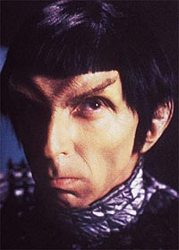
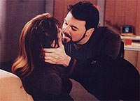
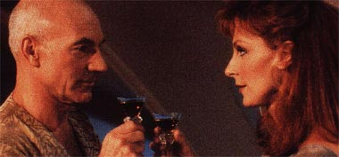
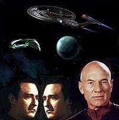
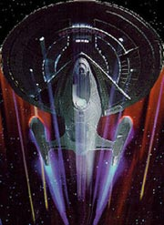

|
"Nmesis":
Ser o fim?!
 Depois de um
adiamento por conta da situao mundial de guerra no-prevista, a
Paramount deu o sinal de largada para as filmagens de "Jornada
nas Estrelas - Nmesis". Este o nome da deusa grega da
justia feita atravs da vingana, para reparar alguma injustia
anterior. Parece estar apropriado com o roteiro adotado por John
Logan, que, como de costume, tem feito alteraes de ltima hora. Depois de um
adiamento por conta da situao mundial de guerra no-prevista, a
Paramount deu o sinal de largada para as filmagens de "Jornada
nas Estrelas - Nmesis". Este o nome da deusa grega da
justia feita atravs da vingana, para reparar alguma injustia
anterior. Parece estar apropriado com o roteiro adotado por John
Logan, que, como de costume, tem feito alteraes de ltima hora.
No h muitas dvidas de que este deve ser o ltimo filme da Nova
Gerao. H poucos dias, como noticiou o Trek Brasilis,
Marina Sirtis (Deanna Troi) deu uma entrevista em que falou sobre
isso e a idia central da histria: as relaes familiares.
Foram muitos anos de convivncia que esto indo embora. Meu
objetivo aqui comentar algo relacionado ao que podemos saber
sobre o roteiro at que o filme seja exibido. Da, falarei sobre o
produto depois de pronto e a sua repercusso no pblico e na crtica.
"Todas as coisas boas tm o seu fim." Esta a traduo
aproximada do ttulo da ltima aventura da Nova Gerao,
mostrada na televiso em um episdio duplo. possvel pensar at
mesmo que Picard e sua turma nem precisariam ter ido para a tela
grande. O sucesso j estava muitssimo garantido com o estrondo
provocado pela grande aceitao da srie nos seus anos de produo,
principalmente, do terceiro ao stimo ano. J falei nesta coluna
sobre o resultado da transferncia da tripulao para o cinema.
De fato, a melhor avaliao foi obtida por "Jornada nas
Estrelas - Primeiro Contato". Os outros dois filmes so
passveis de muitas crticas e reclamaes. Lgico, a opo
de fazer filmes da Nova Gerao residiu no fato de tentar
continuar o sucesso e aumentar o faturamento do estdio. Se "Nmesis"
conseguir ser bem feito, o jogo sair empatado, pois est 2 X 1
para o infortnio. Torcemos para mais uma vitria da qualidade e
da alegria dos fs. O fato de A Nova Gerao ter sido bem
acabada em vida na televiso dificultou seu desenvolvimento no
cinema. O mesmo risco pode ser corrido nas outras sries,
principalmente Deep Space Nine. Espero que a Paramount se
toque do perigo que os longas podem representar.
 Ento,
a hora de apagar as luzes e fechar o boteco. As despedidas sero
feitas depois de Data e Picard mostrarem mais uma vez a que vieram,
carregando a trama. Teremos a participao dos Romulanos,
clonagem, casamento, transferncia, implante cerebral e desativao?
A esto os ingredientes para o bolo e os quitutes da festa de
despedida. A hora para isto acontecer agora, com os atores cada
vez mais velhos e caros do que antes. Alguns deles se envolveram na
produo e na direo a fim de contribuir com as mudanas e o
desfecho na vida de seus personagens.
Riker e Troi finalmente resolveram tornar a vida comum depois de
encontros e desencontros, casos e solido. Os dois pombinhos estaro
a ponto de ir para a ponte de uma nova nave, se envolvendo em misses
menos gloriosas e conhecidas.
 Eles
encontram o seu caminho prprio at que a morte, ou a vida, os
separe. "Imzadi" para c, amizade para l, as coisas vo
seguindo depois de altos e baixos. Riker, enfim, viver a realidade
do comando de maneira plena, sem ter que dizer "sim,
senhor" vrias vezes por misso. S que antes disso tudo
acontecer, ainda daro uma mozinha a Picard para resolver uma
pendenga no Imprio Romulano.
La Forge continuar esquentando os motores da nave, pelo menos por
enquanto. Ele foi um personagem que fez tudo direitinho, cresceu de
posto, virou engenheiro-chefe, se apaixonou vrias vezes, mas
continuou chupando dedo. Permanecer fiel a Picard e se tornar a
bola da vez. Esperamos que arrume um bom comando --um casamento,
pelo menos, parece estar em vista. Ao que tudo indica, La Forge
estar com Leah Brahms, aquela velha paixo vista durante a srie.
O caso de Worf mais complicado. No d para entender direito
porque algum promovido a representante do Imprio Klingon voltar
ponte da Enterprise-E para atirar uns raios e uns torpedos nos
outros. Me parece que isso forar demais a barra. Os roteiristas
sempre do um jeitinho, mas haja razo para a sua convocao.
Santa criatividade, Batman!

Ao que parece, Beverly Crusher ter um pouco mais de
aproveitamento, repassando a sua vida ao lado de Picard. Dos sete
personagens, ela sempre foi a menos aproveitada. A sua velha amizade
com o capito foi mais ntima do que a mdia. Mas ela tende a
deix-lo no espao, seguindo o seu rumo para outro lugar,
aproveitando a sua bagagem acumulada ao longo dos anos. Por causa da
sua especialidade, ela se envolveu mais diretamente com personagens
de outras espcies. Agora hora de transferir o sua experincia
para o conhecimento da Frota.
 Data
continuar vivendo no crebro de um irmozinho com capacidade e
habilidade menor? o que parece. De fato, j no h como Brent
Spiner carregar o personagem na cara, por conta da sua pesada
maquiagem. Tambm aconteceu o inevitvel, com a valorizao do
passe de um ator que contribuiu diretamente para o enorme xito da
srie. Certamente, ele foi o mais diversificado de todos, nos
muitos aspectos que foram explorados na sua busca pela humanidade.
No incio, parecia um bobo da corte, hoje o homem de lata com
inteligncia artificial avanada mais fascinante da televiso e
do cinema. O filme de Spilberg, "A.I.", ainda pode ajudar
a engordar a bilheteria, atraindo um pblico no muito acostumado
s aventuras de fico cientfica. Ser bom tambm se a sua
performance parecer um pouquinho com o Ulisses, interpretado por
John Malkovich em "Construindo um Cara Certinho".
O problema maior o destino de Picard. Afinal de contas, disso
que depende a continuidade das misses da Nova Gerao.
Sou daqueles a pensar que j est pegando mal essa de sair por a
explorando a galxia. Mesmo que seja "o grande Picard", no
d para engolir suas aventuras e desventuras por tanto tempo
--embora tudo leve a crer que ser essa a concluso. Picard
permaneceria a bordo da Enterprise como capito, com uma tripulao
principalmente composta por novatos.
 Idealmente,
o que poderamos esperar do seu desfecho? A primeira possibilidade
satisfazer algumas especulaes anteriores (e a minha vontade)
de tranform-lo num embaixador, como Sarek e Spock. Assim ele sobe
no telhado, tem uma sada honrosa e pode aparecer aqui e ali no
futuro. A segunda possibilidade preparar o caminho para a sua sada
como todo bom mortal. Ele pode ser aposentado e resolver comprar uma
nave menor para explorar outros mundos como arquelogo e turista,
com ou sem algum do lado. At que um dia, v para o alm...
Por enquanto, ficaremos na expectativa, vendo nosso heri ter de
enfrentar um clone de si mesmo, criado em pleno Imprio Romulano.
Hum... no sei no! Essa coisa de Picard lutar contra si mesmo
para salvar a Federao j tinha sido mostrada, de certa forma,
quando foi transformado em Locutus. Alm disso, tenho certas dvidas
da validade de usar um clone humano, vivendo como um escravo para
ser infiltrado na Federao e destru-la, assim como se revoltar
contra o Imprio. Isto meio parecido com os gladiadores que se
revoltaram contra o Imprio como Spartacus e seus companheiros.
Mas, vindo de John Logan, no pode ser muita surpresa, n? Ele vai
ter que nos explicar direitinho qual o interesse de um povo
oprimido, considerado sub-raa, em tentar um golpe de estado no Imprio
e partir para cima da Federao. Na verdade, tambm acho que j
chega de mostrar sempre filmes onde a vida da Federao corre
perigo iminente, como nos ltimos trs filmes. Tudo bem que aqui e
ali algum fira os seus interesses e ela tente proteg-los. Porm,
penso que seria melhor tratar de uma aventura de explorao.
Afinal de contas no foi para isso que a srie e a nave foram
feitas?
De repente, o resultado pode surpreender positivamente. Vamos ver
como que fica.
Cludio
Silveira escreve regularmente sobre os filmes com
exclusividade para o Trek Brasilis
|